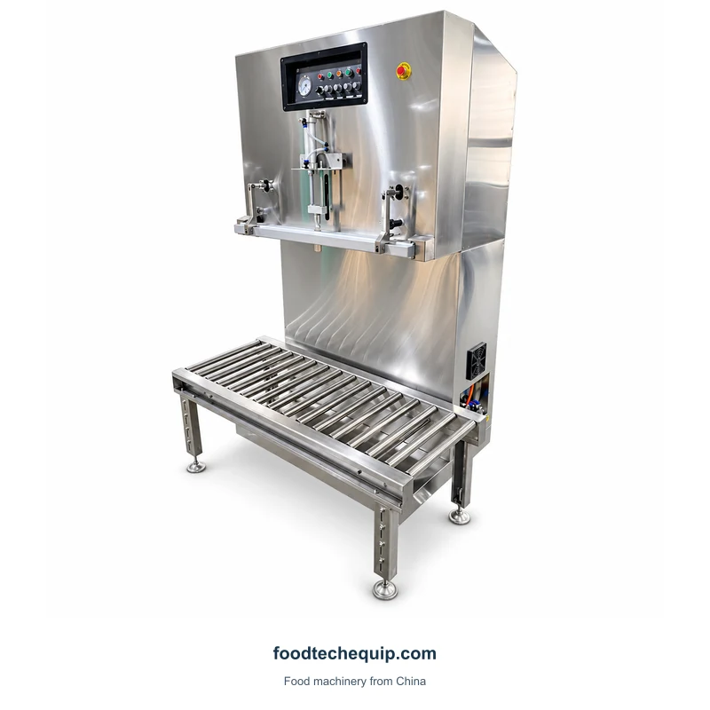
Embalagem a vácuo
Máquina de embalagem a vácuo externa vertical
Uma máquina de embalagem a vácuo externa vertical com uma mesa rolante para apoiar a embalagem na posição de trabalho.
Ver equipamentoCompare a embalagem a vácuo pelo layout de trabalho: câmara, seção de vedação externa, gabinete, correia ou arranjo de compressão. A embalagem cheia e o método de manuseio ajudam a restringir a escolha.

Uma máquina de embalagem a vácuo externa vertical com uma mesa rolante para apoiar a embalagem na posição de trabalho.
Ver equipamento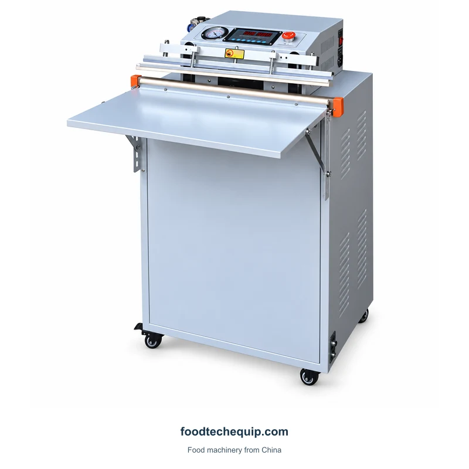
Seladora a vácuo de piso com mesa de apoio frontal e barra de vedação superior.
Ver equipamento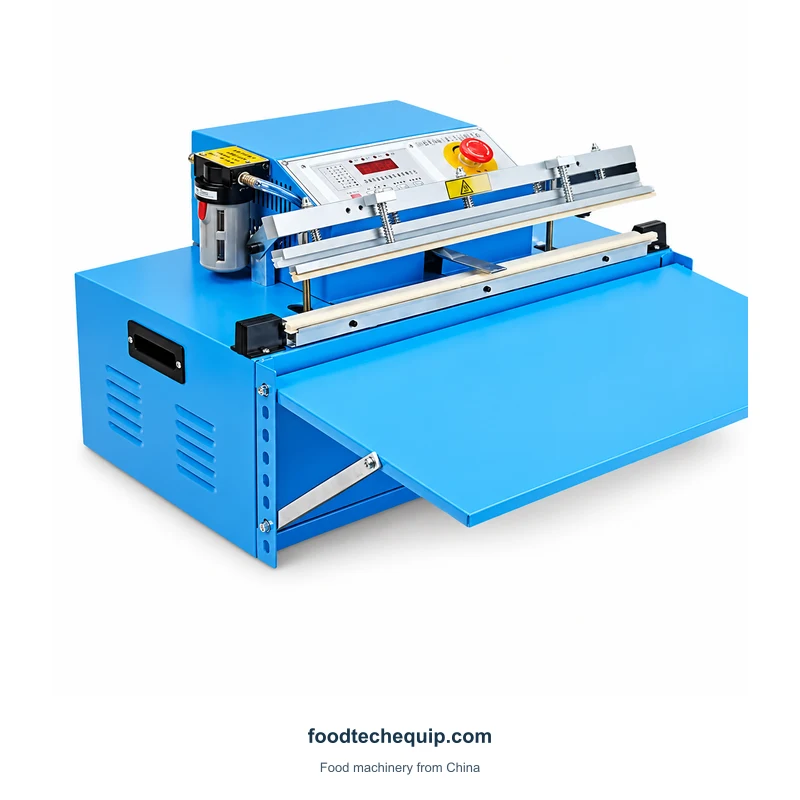
Uma seladora a vácuo de mesa com superfície de suporte frontal e controles superiores.
Ver equipamento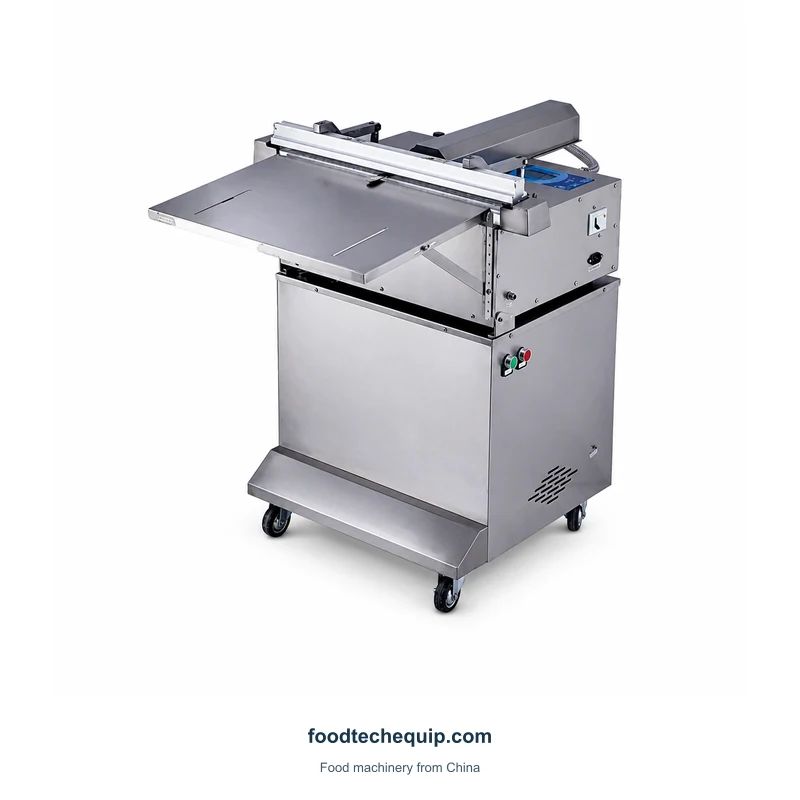
Uma máquina de embalagem a vácuo externa inclinável montada em um gabinete com rodas.
Ver equipamento
Uma máquina de embalagem a vácuo de gabinete para embalagens de arroz e grãos.
Ver equipamento
Uma máquina de embalagem a vácuo externa com altura ajustável e uma seção de trabalho frontal.
Ver equipamento
Máquina de embalagem a vácuo externa com elevador vertical e barra de vedação frontal.
Ver equipamento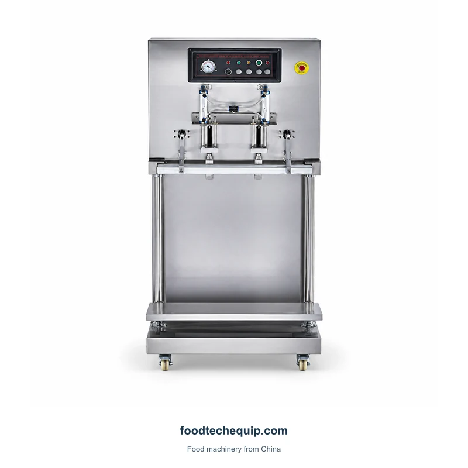
Uma máquina de embalagem a vácuo externa vertical com controles frontais e configurações elétricas alternativas.
Ver equipamento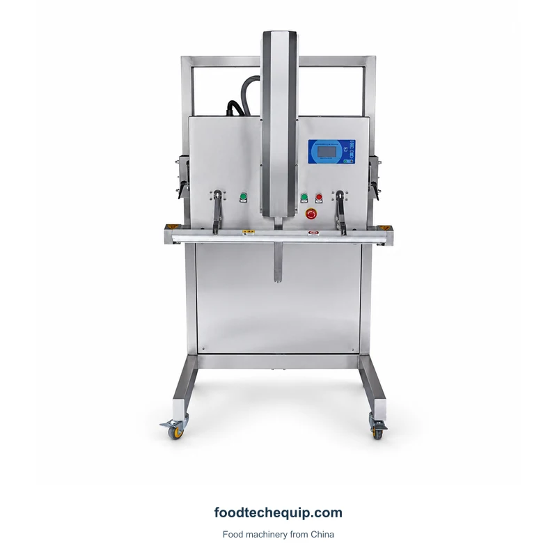
Uma máquina de embalagem a vácuo externa com conjunto de elevação e seção de vedação frontal.
Ver equipamento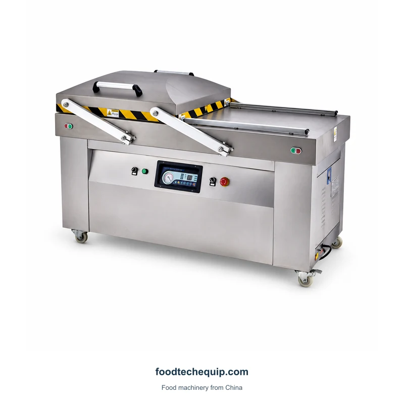
Máquina de embalagem a vácuo de câmara dupla com duas áreas de trabalho e tampa móvel.
Ver equipamento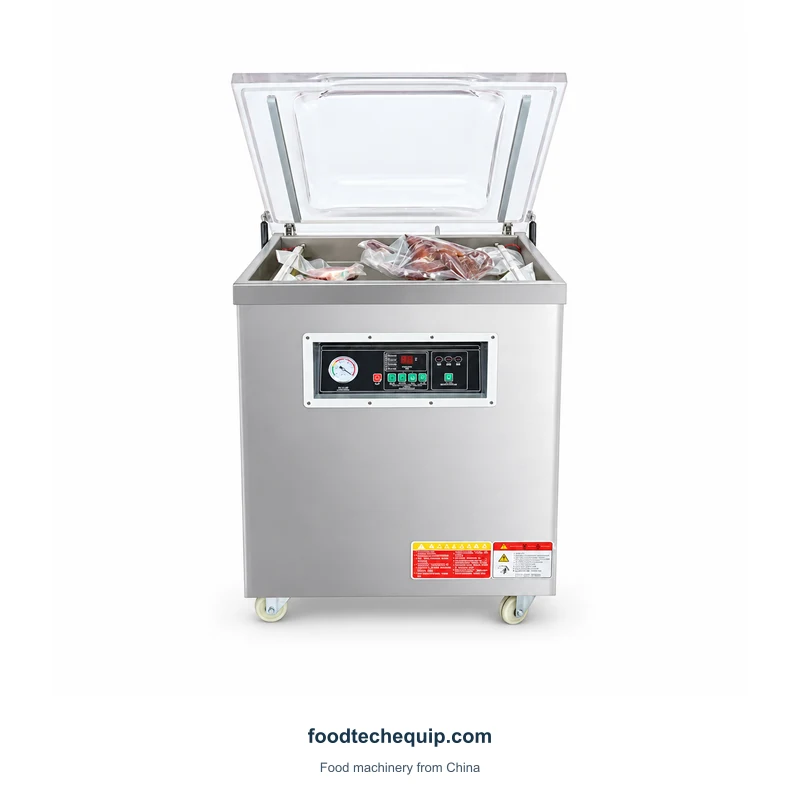
Máquina de embalagem a vácuo de câmara única com tampa transparente e controles frontais.
Ver equipamento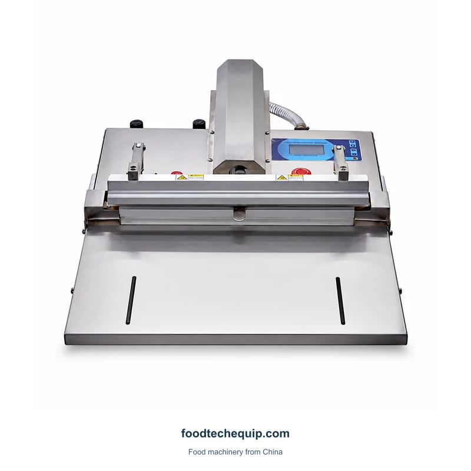
Uma máquina de embalagem a vácuo externa de mesa com um conjunto de vedação frontal e superfície de suporte.
Ver equipamento
Equipamento externo de embalagem a vácuo oferecido em layouts verticais e de seção elevatória.
Ver equipamento
Uma máquina de embalagem a vácuo externa de piso com um conjunto de elevação e seção de vedação frontal.
Ver equipamento
Uma máquina de embalagem a vácuo de gabinete com porta de câmara frontal e controles superiores.
Ver equipamento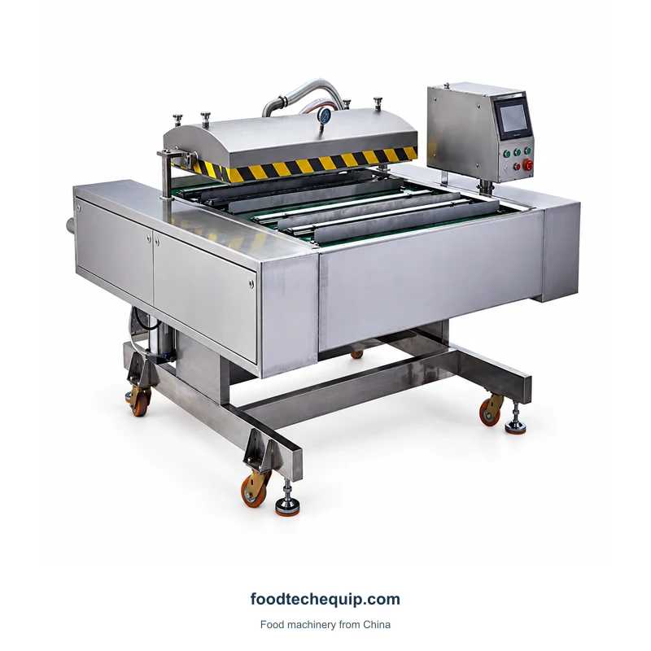
Uma máquina de embalagem a vácuo de esteira contínua com carregamento por transportador, tampa de câmara e controles elevados.
Ver equipamento
Uma máquina de embalagem a vácuo com gabinete de carregamento frontal, controles superiores e caixa de aço inoxidável.
Ver equipamento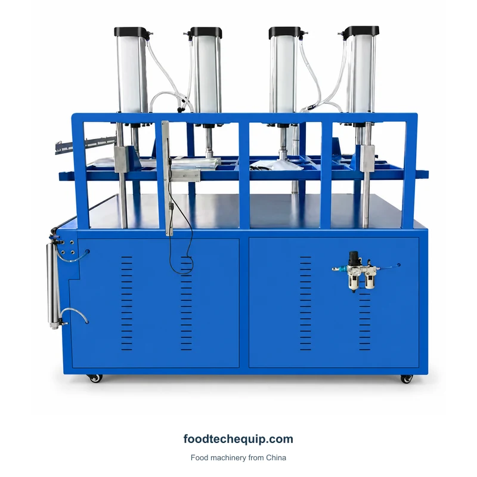
Uma máquina de embalagem a vácuo por compressão com estrutura superior, cilindros pneumáticos e base de gabinete.
Ver equipamento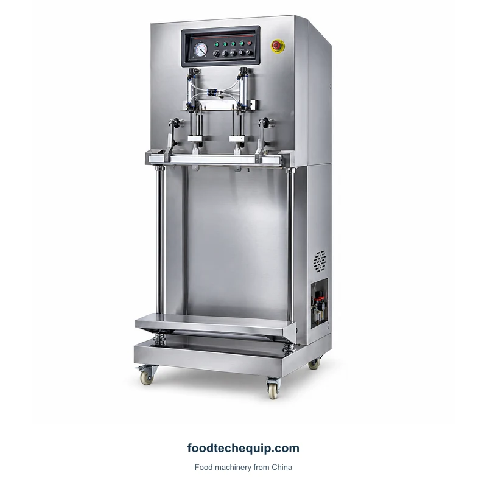
Uma máquina de embalagem a vácuo externa vertical com suporte de embalagem ajustável.
Ver equipamento
Uma máquina de embalagem a vácuo por compressão com uma estrutura pneumática suspensa.
Ver equipamentoTente uma palavra-chave diferente ou limpe os filtros.
Para layouts de câmaras, forneça todas as dimensões do produto ensacado e disposição de carregamento. Para layouts externos, descreva o suporte na posição de vedação.
Fornecer requisitos de construção e vedação de sacos juntamente com amostras reais de embalagens. Discuta quaisquer requisitos de prazo de validade do produto como parte do processo mais amplo de produto e embalagem.
| Área de seleção | O que comparar | O que fornecer |
|---|---|---|
| Câmara | Pacote completo dentro da área de trabalho | Envelope preenchido e padrão de carregamento |
| Externo | Suporte fora da seção de vedação | Boca do saco e altura do suporte |
| Cinto ou gabinete | Acesso e transferência de pacotes | Sequência de espaçamento, carregamento e coleta |
O pacote cheio deve caber o arranjo de trabalho e permanecer apoiado durante o carregamento. Discuta a boca do saco e o requisito de fechamento ao lado do envelope completo do pacote. Trate qualquer tarefa separada de fechamento de sacos como sua própria etapa de processo.